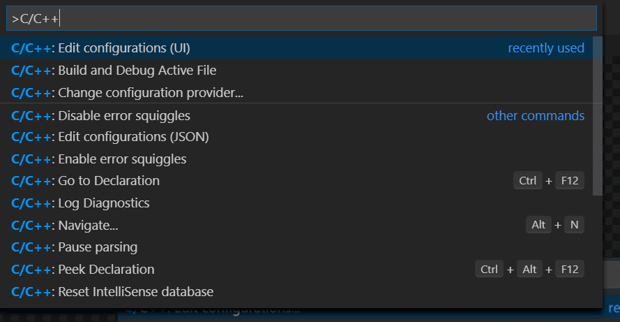

Using C++ on Linux in VS Code
In this tutorial, you will configure Visual Studio Code to use the GCC C++ compiler (g++) and GDB debugger on Linux. GCC stands for GNU Compiler Collection; GDB is the GNU debugger.
After configuring VS Code, you will compile and debug a simple C++ program in VS Code. This tutorial does not teach you GCC, GDB, Ubuntu or the C++ language. For those subjects, there are many good resources available on the Web.
If you have trouble, feel free to file an issue for this tutorial in the VS Code documentation repository.
Prerequisites
To successfully complete this tutorial, you must do the following:
-
Install Visual Studio Code.
-
Install the C++ extension for VS Code. You can install the C/C++ extension by searching for 'c++' in the Extensions view (X (Windows, Linux Ctrl+Shift+X)).

Ensure GCC is installed
Although you'll use VS Code to edit your source code, you'll compile the source code on Linux using the g++ compiler. You'll also use GDB to debug. These tools are not installed by default on Ubuntu, so you have to install them. Fortunately, that's easy.
First, check to see whether GCC is already installed. To verify whether it is, open a Terminal window and enter the following command:
gcc -v
If GCC isn't installed, run the following command from the terminal window to update the Ubuntu package lists. An out-of-date Linux distribution can sometimes interfere with attempts to install new packages.
sudo apt-get update
Next install the GNU compiler tools and the GDB debugger with this command:
sudo apt-get install build-essential gdb
Create Hello World
From the terminal window, create an empty folder called projects to store your VS Code projects. Then create a subfolder called helloworld, navigate into it, and open VS Code in that folder by entering the following commands:
mkdir projects
cd projects
mkdir helloworld
cd helloworld
code .
The code . command opens VS Code in the current working folder, which becomes your "workspace". As you go through the tutorial, you will create three files in a .vscode folder in the workspace:
tasks.json(compiler build settings)launch.json(debugger settings)c_cpp_properties.json(compiler path and IntelliSense settings)
Add hello world source code file
In the File Explorer title bar, select New File and name the file helloworld.cpp.

Paste in the following source code:
#include <iostream>
#include <vector>
#include <string>
using namespace std;
int main()
{
vector<string> msg {"Hello", "C++", "World", "from", "VS Code", "and the C++ extension!"};
for (const string& word : msg)
{
cout << word << " ";
}
cout << endl;
}
Now press S (Windows, Linux Ctrl+S) to save the file. Notice that your files are listed in the File Explorer view (E (Windows, Linux Ctrl+Shift+E)) in the side bar of VS Code:

You can also enable Auto Save to automatically save your file changes, by checking Auto Save in the main File menu.
The Activity Bar on the edge of Visual Studio Code lets you open different views such as Search, Source Control, and Run. You'll look at the Run view later in this tutorial. You can find out more about the other views in the VS Code User Interface documentation.
Note: When you save or open a C++ file, you may see a notification from the C/C++ extension about the availability of an Insiders version, which lets you test new features and fixes. You can ignore this notification by selecting the
X(Clear Notification).
Explore IntelliSense
In the helloworld.cpp file, hover over vector or string to see type information. After the declaration of the msg variable, start typing msg.as you would when calling a member function. You should immediately see a completion list that shows all the member functions, and a window that shows the type information for the msg object:

You can press the Tab key to insert the selected member. Then, when you add the opening parenthesis, you'll see information about arguments that the function requires.
Run helloworld.cpp
Remember, the C++ extension uses the C++ compiler you have installed on your machine to build your program. Make sure you have a C++ compiler installed before attempting to run and debug helloworld.cpp in VS Code.
-
Open
helloworld.cppso that it is the active file. -
Press the play button in the top right corner of the editor.
-
Choose g++ build and debug active file from the list of detected compilers on your system.

You'll only be asked to choose a compiler the first time you run helloworld.cpp. This compiler will be set as the "default" compiler in tasks.json file.
-
After the build succeeds, your program's output will appear in the integrated Terminal.

The first time you run your program, the C++ extension creates tasks.json, which you'll find in your project's .vscode folder. tasks.json stores build configurations.
Your new tasks.json file should look similar to the JSON below:
{
"version": "2.0.0",
"tasks": [
{
"type": "shell",
"label": "C/C++: g++ build active file",
"command": "/usr/bin/g++",
"args": ["-g", "${file}", "-o", "${fileDirname}/${fileBasenameNoExtension}"],
"options": {
"cwd": "/usr/bin"
},
"problemMatcher": ["$gcc"],
"group": {
"kind": "build",
"isDefault": true
},
"detail": "Task generated by Debugger."
}
]
}
Note: You can learn more about
tasks.jsonvariables in the variables reference.
The command setting specifies the program to run; in this case that is g++.
The args array specifies the command-line arguments that will be passed to g++. These arguments must be specified in the order expected by the compiler.
This task tells g++ to take the active file (${file}), compile it, and create an executable file in the current directory (${fileDirname}) with the same name as the active file but without an extension (${fileBasenameNoExtension}), resulting in helloworld for our example.
The label value is what you will see in the tasks list; you can name this whatever you like.
The detail value is what you will as the description of the task in the tasks list. It's highly recommended to rename this value to differentiate it from similar tasks.
From now on, the play button will read from tasks.json to figure out how to build and run your program. You can define multiple build tasks in tasks.json, and whichever task is marked as the default will be used by the play button. In case you need to change the default compiler, you can run Tasks: Configure default build task. Alternatively you can modify the tasks.json file and remove the default by replacing this segment:
"group": {
"kind": "build",
"isDefault": true
},
with this:
"group": "build",
Modifying tasks.json
You can modify your tasks.json to build multiple C++ files by using an argument like "${workspaceFolder}/*.cpp" instead of ${file}.This will build all .cpp files in your current folder. You can also modify the output filename by replacing "${fileDirname}/${fileBasenameNoExtension}" with a hard-coded filename (for example 'helloworld.out').
Debug helloworld.cpp
- Go back to
helloworld.cppso that it is the active file. - Set a breakpoint by clicking on the editor margin or using F9 on the current line.

- From the drop-down next to the play button, select Debug C/C++ File.

- Choose C/C++: g++ build and debug active file from the list of detected compilers on your system (you'll only be asked to choose a compiler the first time you run/debug
helloworld.cpp).
The play button has two modes: Run C/C++ File and Debug C/C++ File. It will default to the last-used mode. If you see the debug icon in the play button, you can just click the play button to debug, instead of selecting the drop-down menu item.
Explore the debugger
Before you start stepping through the code, let's take a moment to notice several changes in the user interface:
-
The Integrated Terminal appears at the bottom of the source code editor. In the Debug Output tab, you see output that indicates the debugger is up and running.
-
The editor highlights line 12, which is a breakpoint that you set before starting the debugger:

-
The Run and Debug view on the left shows debugging information. You'll see an example later in the tutorial.
-
At the top of the code editor, a debugging control panel appears. You can move this around the screen by grabbing the dots on the left side.

If you already have a launch.json file in your workspace, the play button will read from it when figuring out how run and debug your C++ file. If you dont have launch.json, the play button will create a temporary quick debug configuration on the fly, eliminating the need for launch.json altogether!
Step through the code
Now you're ready to start stepping through the code.
-
Click or press the Step over icon in the debugging control panel.

This will advance program execution to the first line of the for loop, and skip over all the internal function calls within the
vectorandstringclasses that are invoked when themsgvariable is created and initialized. Notice the change in the Variables window on the side.
-
Press Step over again to advance to the next statement in this program (skipping over all the internal code that is executed to initialize the loop). Now, the Variables window shows information about the loop variables.
-
Press Step over again to execute the
coutstatement. (Note that as of the March 2019 release, the C++ extension does not print any output to the Debug Console until the last cout executes.) -
If you like, you can keep pressing Step over until all the words in the vector have been printed to the console. But if you are curious, try pressing the Step Into button to step through source code in the C++ standard library!

To return to your own code, one way is to keep pressing Step over. Another way is to set a breakpoint in your code by switching to the
helloworld.cpptab in the code editor, putting the insertion point somewhere on thecoutstatement inside the loop, and pressing F9. A red dot appears in the gutter on the left to indicate that a breakpoint has been set on this line.
Then press F5 to start execution from the current line in the standard library header. Execution will break on
cout. If you like, you can press F9 again to toggle off the breakpoint.When the loop has completed, you can see the output in the Debug Console tab of the integrated terminal, along with some other diagnostic information that is output by GDB.

Set a watch
To keep track of the value of a variable as your program executes, set a watch on the variable.
-
Place the insertion point inside the loop. In the Watch window, click the plus sign and in the text box, type
word, which is the name of the loop variable. Now view the Watch window as you step through the loop.
-
To quickly view the value of any variable while execution is paused on a breakpoint, you can hover over it with the mouse pointer.

Next, you'll create a tasks.json file to tell VS Code how to build (compile) the program. This task will invoke the g++ compiler to create an executable file from the source code.
It's important to have helloworld.cpp open in the editor because the next step uses the active file in the editor for context to create the build task in the next step.
Customize debugging with launch.json
When you debug with the play button or F5, the C++ extension creates a dynamic debug configuration on the fly.
There are cases where you'd want to customize your debug configuration, such as specifying arguments to pass to the program at runtime. You can define custom debug configurations in a launch.json file.
To create launch.json, choose Add Debug Configuration from the play button drop-down menu.

You'll then see a dropdown for various predefined debugging configurations. Choose g++ build and debug active file.
VS Code creates a launch.json file, which looks something like this:
{
"version": "0.2.0",
"configurations": [
{
"name": "C/C++: g++ build and debug active file",
"type": "cppdbg",
"request": "launch",
"program": "${fileDirname}/${fileBasenameNoExtension}",
"args": [],
"stopAtEntry": false,
"cwd": "${workspaceFolder}",
"environment": [],
"externalConsole": false,
"MIMode": "gdb",
"miDebuggerPath": "/usr/bin/gdb",
"setupCommands": [
{
"description": "Enable pretty-printing for gdb",
"text": "-enable-pretty-printing",
"ignoreFailures": true
}
],
"preLaunchTask": "C/C++: g++ build active file"
}
]
}
In the JSON above, program specifies the program you want to debug. Here it is set to the active file folder ${fileDirname} and active filename without an extension ${fileBasenameNoExtension}, which if helloworld.cpp is the active file will be helloworld. The args property is an array of arguments to pass to the program at runtime.
By default, the C++ extension won't add any breakpoints to your source code and the stopAtEntry value is set to false.
Change the stopAtEntry value to true to cause the debugger to stop on the main method when you start debugging.
From now on, the play button and F5 will read from your
launch.jsonfile when launching your program for debugging.
C/C++ configurations
If you want more control over the C/C++ extension, you can create a c_cpp_properties.json file, which will allow you to change settings such as the path to the compiler, include paths, C++ standard (default is C++17), and more.
You can view the C/C++ configuration UI by running the command C/C++: Edit Configurations (UI) from the Command Palette (P (Windows, Linux Ctrl+Shift+P)).

This opens the C/C++ Configurations page. When you make changes here, VS Code writes them to a file called c_cpp_properties.json in the .vscode folder.
You only need to modify the Include path setting if your program includes header files that are not in your workspace or in the standard library path.
Visual Studio Code places these settings in .vscode/c_cpp_properties.json. If you open that file directly, it should look something like this:
{
"configurations": [
{
"name": "Linux",
"includePath": ["${workspaceFolder}/**"],
"defines": [],
"compilerPath": "/usr/bin/gcc",
"cStandard": "c11",
"cppStandard": "c++17",
"intelliSenseMode": "clang-x64"
}
],
"version": 4
}
Reusing your C++ configuration
VS Code is now configured to use gcc on Linux. The configuration applies to the current workspace. To reuse the configuration, just copy the JSON files to a .vscode folder in a new project folder (workspace) and change the names of the source file(s) and executable as needed.
Troubleshooting
Compiler and linking errors
The most common cause of errors (such as undefined _main, or attempting to link with file built for unknown-unsupported file format, and so on) occurs when helloworld.cpp is not the active file when you start a build or start debugging. This is because the compiler is trying to compile something that isn't source code, like your launch.json, tasks.json, or c_cpp_properties.json file.
Next steps
- Explore the VS Code User Guide.
- Review the Overview of the C++ extension.
- Create a new workspace, copy your .json files to it, adjust the necessary settings for the new workspace path, program name, and so on, and start coding!